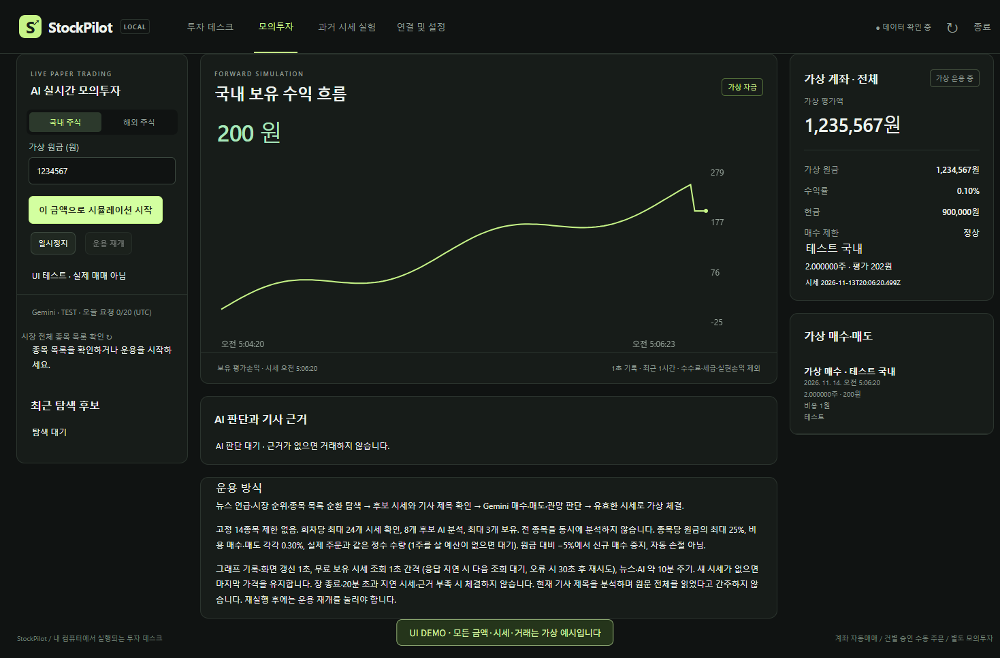

PROJECT · ai-stock-trading-program
StockPilot · AI 주식 분석·모의투자
한국·미국 주식의 시세·뉴스와 Gemini 판단을 연결한 Windows 데스크톱 앱. AI 응답을 실제 서비스 흐름에 연결하면서 장부 분리, 주문 검증, 오류 처리를 구현한 프로젝트입니다.
79 / 792026.11.14 자동 테스트 통과
KR · US시장·통화별 장부와 화면 구분
ElectronWindows 데스크톱 UI
Gemini기사 제목과 시세 기반 판단

해결하려던 문제
시세·뉴스 조회와 AI 판단, 모의 운용 기록을 한 화면에서 다루되, 잘못된 응답이나 오래된 시세가 바로 주문으로 이어지지 않도록 구성했습니다.
주요 구현
- 앱과 로컬 API: Electron 창과 Node.js 서비스를 연결하고 세션·출처를 검사합니다.
- AI 판단과 데이터 수집: 시세 갱신과 뉴스·AI 분석 주기를 분리하고, 외부 응답 오류와 호출 한도를 처리합니다.
- 모의 장부와 주문 검증: 가상 장부와 실계좌 경로를 분리하고 중복 요청, 손실 한도, 시세 유효성을 검사합니다.
- 데이터 보관: 로컬 설정·장부 복원과 Windows DPAPI 기반 키 저장을 구현했습니다.
기술적 결정
- AI가 반환한 판단을 검증한 뒤 실행 단계에 전달하도록 구성했습니다.
- 주문 결과가 불명확할 때 자동으로 재주문하지 않으며, 재실행 후 자동 운용은 꺼진 상태로 복원합니다.
- 시장별 정규장 시간과 시세 시각을 확인하고, 국내·해외 손익을 각 통화로 표시합니다.
검증 결과와 범위
2026년 11월 14일 공개 소스 9098cee, Node.js 24.19.0에서 node --test tests/*.test.js를 실행해 79개 테스트가 모두 통과했습니다. 테스트는 가짜 키·응답과 임시 장부를 사용합니다.
위험 제한, 주문 경합, 장부 분리, 시세 처리 등을 검증한 결과이며 실제 계좌 인증·주문·체결의 종단 간 검증이나 투자 성과를 뜻하지 않습니다.
현재 한계
AI 분석은 주로 기사 제목에 의존합니다. 가상 체결은 수신 가격에 즉시 체결된다는 가정이며 실제 호가·부분 체결을 재현하지 않습니다. 모델 판단의 수익성을 검증한 시스템은 아닙니다.